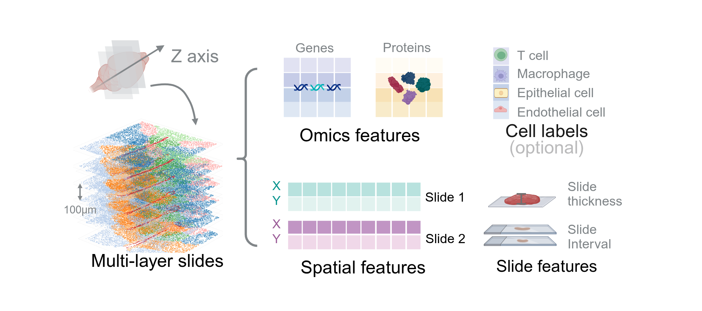
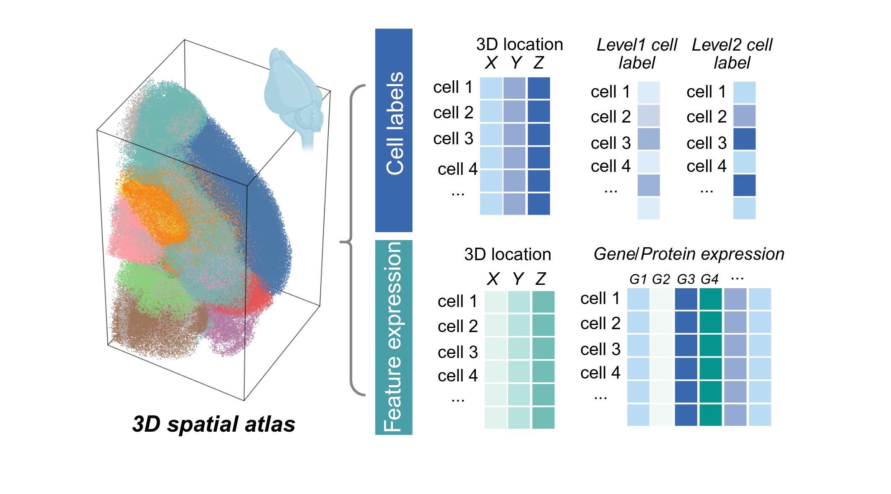

From Discrete Slices to Continuous Volume
DeepSpatial reframes 3D reconstruction as a continuous probability density evolution. Rather than merely inserting 2.5D planes, it models the multi-modal transitions between physical slices as mixed continuous-discrete dynamics via a scalable Transformer architecture.

Input Slides
Multi-layer 2D spatial omics sections with spatial coordinates, omics expressions (genes & proteins), optional cell-type labels, and physical slice metadata including thickness and interval distances.

Output Virtual Tissue
A fully continuous 3D spatial atlas with precise 3D coordinates, cell-type identities, and high-dimensional omics expressions assigned to each generated virtual cell.

i. UOT Coupling
Unbalanced Optimal Transport constructs a cost matrix integrating spatial proximity, transcriptomic similarity, and cell-type penalty to establish biologically rigorous cell-to-cell correspondences across adjacent slices.

ii. Flow Matching (GiT)
A scalable multi-modal Transformer trained via flow matching learns a shared continuous vector field over spatial coordinates, transcriptomic expressions, and categorical cell-type identities.

iii. 3D Volume Generation
Solving Probability Flow ODEs with density-preserving bidirectional sampling to synthesize tissue at any arbitrary depth, guided by interpolated macroscopic cell density fields for biologically faithful volume reconstruction.